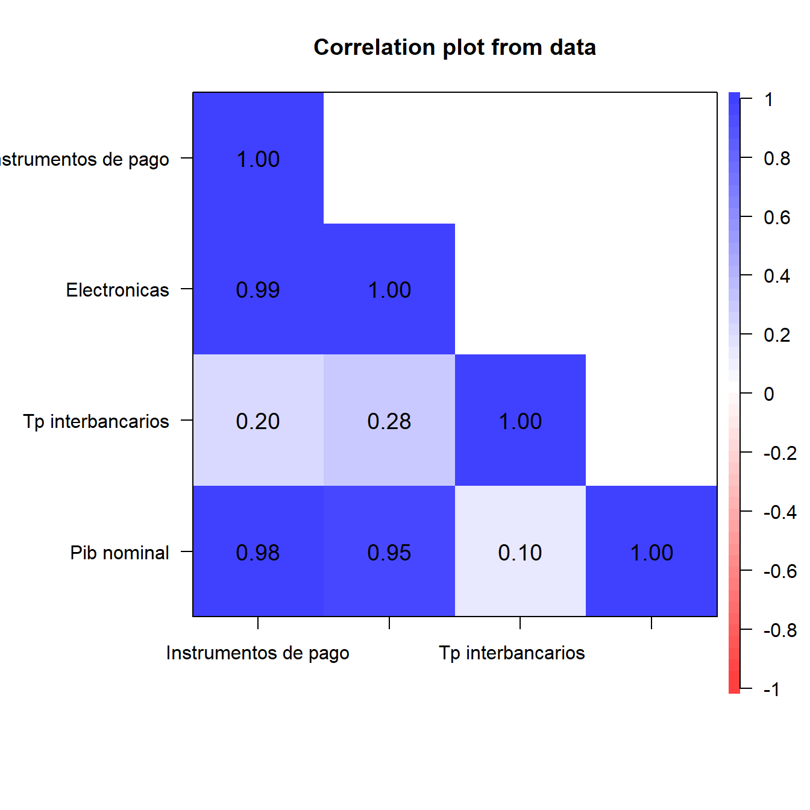
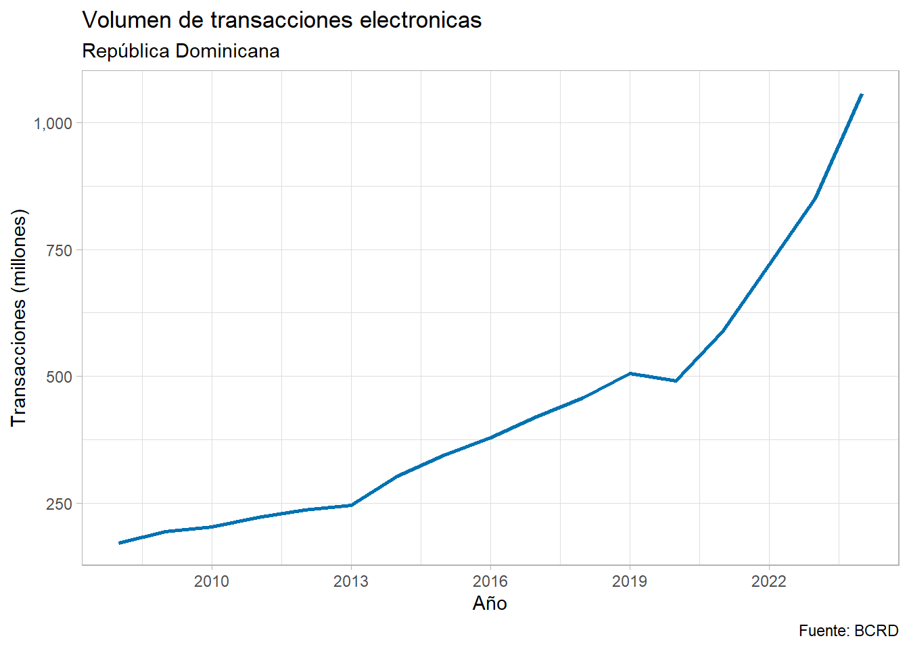
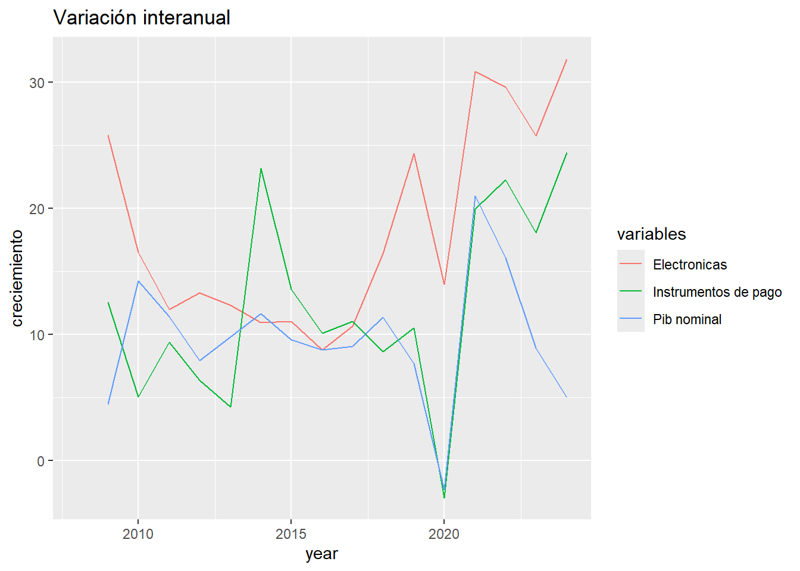

| Estadísticos descriptivos | ||||
|---|---|---|---|---|
| Antes-covid (2008-2019) | ||||
| instrumentos | electronicas | tp | pib | |
| Media | 306,862,353.7 | 53,087,818.6 | 7.3 | 2,901,353.0 |
| Mediana | 274,662,944.0 | 49,778,890.0 | 6.5 | 2,772,717.4 |
| Desv. Est | 112,731,914.9 | 23,176,290.5 | 2.7 | 969,940.7 |
| Mínimo | 171,603,626.0 | 22,577,275.0 | 5.6 | 1,661,642.7 |
| Máximo | 505,628,161.0 | 101,370,364.0 | 15.5 | 4,562,235.1 |
Análisis Exploratorio de las Transferencias Electrónicas en República Dominicana: Un Estudio Pre y Post-COVID
Práctica 1 - Seminario de Economía Aplicada 1
Resumen
El presente informe examina la evolución de las transferencias electrónicas en República Dominicana durante el período 2008-2024, revelando transformaciones significativas en el sistema de pagos tras la pandemia de COVID-19. Los resultados muestran un crecimiento exponencial en el volumen de transacciones electrónicas, con aumentos promedio del 141% en instrumentos de pago y 290% en transferencias electrónicas durante el período post-COVID comparado con la era pre-pandémica.
Introducción
Este ejercicio tiene como objetivo analizar la evolución del sistema de pagos electrónicos en República Dominicana, centrándose en las transformaciones estructurales observadas durante el período 2008-2024. Las variables seleccionadas para el análisis incluyen el volumen de transacciones con instrumentos de pago electrónicos, las transferencias electrónicas, la tasa pasiva interbancaria y el PIB nominal.
La relevancia económica de estas variables radica en su capacidad para reflejar el grado de bancarización, digitalización financiera y modernización del sistema de pagos dominicano. Las transferencias electrónicas constituyen un indicador crucial para los hacedores de política monetaria, dado su papel en la transmisión de la política monetaria y su impacto en la velocidad de circulación del dinero.
La hipótesis exploratoria que guía este análisis sugiere que la pandemia de COVID-19 aceleró significativamente la adopción de medios de pago electrónicos en República Dominicana, generando un cambio estructural en los patrones de consumo y las preferencias de pago de la población.
Datos y metodología
El dataset utilizado proviene del Banco Central de República Dominicana (BCRD) y comprende 17 observaciones anuales correspondientes al período 2008-2024. La unidad de análisis son las transacciones agregadas a nivel nacional con frecuencia anual, permitiendo capturar tanto tendencias de largo plazo como cambios estructurales significativos.
Las variables analizadas incluyen el volumen de transacciones con instrumentos de pago electrónicos (expresado en unidades), las transferencias electrónicas (en unidades), la tasa pasiva interbancaria (como porcentaje) y el PIB nominal (en millones de pesos dominicanos). Para el análisis exploratorio de datos (EDA) se emplearon herramientas estadísticas descriptivas, análisis de correlación y visualización gráfica temporal.
La metodología incluyó la segmentación del período en dos sub-muestras: pre-COVID (2008-2019) y post-COVID (2020-2024), permitiendo identificar cambios en los patrones estadísticos y evaluar el impacto de la pandemia en el comportamiento de las variables financieras.
Resultados
Análisis descriptivos de las variables
Los estadísticos descriptivos revelan transformaciones dramáticas en el sistema de pagos dominicano. Durante el período pre-COVID, los instrumentos de pago electrónicos registraron un promedio de 306.9 millones de transacciones anuales, mientras que en el período post-COVID esta cifra se elevó a 741.6 millones, representando un incremento del 141 %. De manera más pronunciada, las transferencias electrónicas aumentaron de un promedio de 53.1 millones en el período pre-COVID a 206.9 millones en el post-COVID, equivalente a un crecimiento del 290 %.
Comportamiento antes del covid:
Comportamiento después del covid:
| Estadísticos descriptivos | ||||
|---|---|---|---|---|
| Post-covid (2020-2024) | ||||
| instrumentos | electronicas | tp | pib | |
| Media | 741,568,606.0 | 206,890,999.2 | 8.2 | 6,018,195.0 |
| Mediana | 719,957,145.0 | 196,019,325.0 | 9.8 | 6,260,564.0 |
| Desv. Est | 222,923,777.8 | 82,338,856.3 | 3.7 | 1,099,697.7 |
| Mínimo | 490,709,852.0 | 115,547,180.0 | 4.0 | 4,456,657.4 |
| Máximo | 1,058,133,076.0 | 325,142,471.0 | 11.7 | 7,161,020.2 |
La variabilidad de los datos también experimentó cambios sustanciales. La desviación estándar de los instrumentos de pago se duplicó en el período post-COVID, pasando de 112.7 millones a 222.9 millones, sugiriendo una mayor volatilidad en la adopción de tecnologías de pago. Similar patrón se observa en las transferencias electrónicas, cuya desviación estándar aumentó de 23.2 millones a 82.3 millones.
Correlación

El análisis de correlación revela fuertes asociaciones entre las variables del sistema de pagos y la actividad económica. Los instrumentos de pago electrónicos muestran una correlación de 0.98 con el PIB nominal, mientras que las transferencias electrónicas presentan una correlación de 0.95 con la misma variable. Particularmente notable es la alta correlación (0.986) entre instrumentos de pago y transferencias electrónicas, indicando que ambas modalidades evolucionan de manera sincronizada.
La tasa pasiva interbancaria muestra correlaciones más débiles con las demás variables, registrando coeficientes de 0.203 con instrumentos de pago y 0.280 con transferencias electrónicas. Este patrón sugiere que las decisiones de adopción de pagos electrónicos están más influenciadas por factores estructurales y tecnológicos que por las condiciones monetarias de corto plazo.
Gráfico 1

Los gráficos temporales evidencian un punto de inflexión claro alrededor de 2020, momento en que tanto los instrumentos de pago como las transferencias electrónicas experimentaron aceleraciones significativas en sus tasas de crecimiento. El volumen de transacciones electrónicas mostró un crecimiento exponencial particularmente pronunciado durante 2020-2022, consolidándose posteriormente en niveles sustancialmente superiores a los observados en la década anterior.
Gráfico 2

Conclusión
Los hallazgos más relevantes del análisis confirman la hipótesis de un cambio estructural en el sistema de pagos dominicano, catalizado por la pandemia de COVID-19. El crecimiento del 141% en instrumentos de pago y del 290% en transferencias electrónicas entre los períodos pre y post-COVID refleja una aceleración sin precedentes en la digitalización financiera del país.
La alta correlación entre las variables de pagos electrónicos y el PIB nominal (superiores a 0.94) sugiere que la adopción tecnológica en el sector financiero actúa como un motor complementario del crecimiento económico. La sincronización observada entre diferentes modalidades de pago electrónico indica la existencia de efectos de red y complementariedades tecnológicas que refuerzan mutuamente la adopción digital.
Una pregunta de investigación futura relevante sería: ¿En qué medida la aceleración de los pagos electrónicos ha contribuido a mejorar la inclusión financiera y reducir la economía informal en República Dominicana? Esta línea de indagación podría complementarse con el análisis de variables socioeconómicas desagregadas por regiones y estratos poblacionales para evaluar el impacto distributivo de la digitalización financiera.
Reflexión sobre Escritura Económica
Anexos
Matrix de Correlación
instrumentos_de_pago electronicas tp_interbancarios
instrumentos_de_pago 1.000 0.986 0.203
electronicas 0.986 1.000 0.280
tp_interbancarios 0.203 0.280 1.000
pib_nominal 0.980 0.949 0.105
pib_nominal
instrumentos_de_pago 0.980
electronicas 0.949
tp_interbancarios 0.105
pib_nominal 1.000